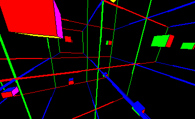
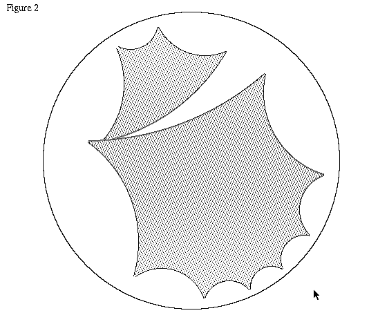
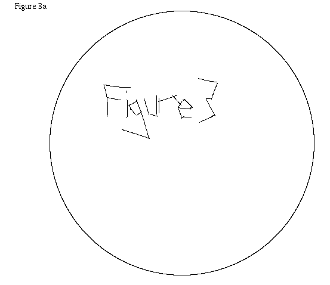
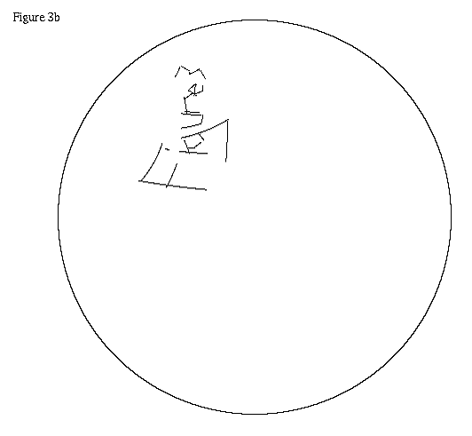
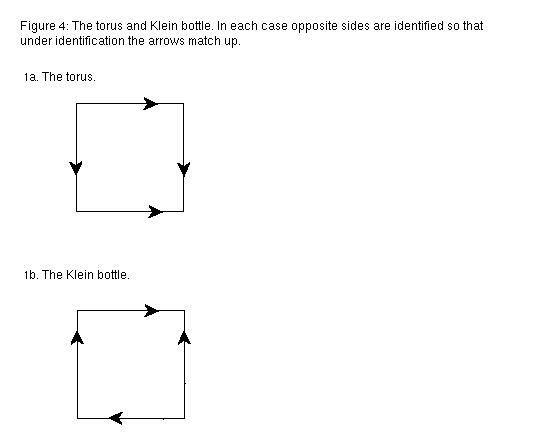
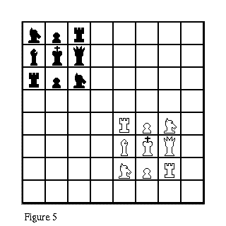
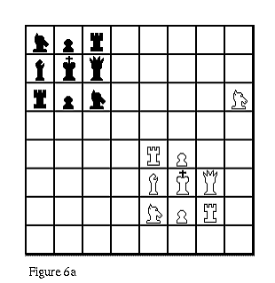
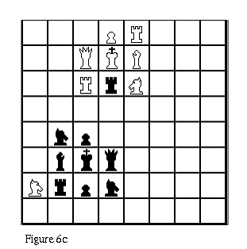

The following article describes software written for the Macintosh by Jeff Weeks. It also includes puzzlers which can be solved without the software. All of the programs are available free using anonymous ftp. See the end of the article for details.
"Explaining simple closed manifolds such as the two-torus, the Klein bottle, and three-torus becomes easier," says Jeff Weeks, "if students get a good gut-level understanding by playing games in them. The students experience the manifolds first, and only later discuss them theoretically." To this end, Weeks has written programs to allow students to get an intuition for some two- and three-dimensional manifolds. He has used the programs with high school and college students and says they make a good introduction to simple two- and three-dimensional manifolds. Here is a brief description of three of them, including some puzzlers for torus and Klein bottle chess.
1. Flight Simulator
This is a program to learn about three-dimensional manifolds. It shows what you see when you travel in the three-sphere, projective three-space, or many other three-manifolds. You can travel any direction you want using the mouse. For example, Figure 1 shows a cube as viewed in the three-torus. (See the program's About Box, the first item in the apple menu, for flying instructions.)

2. Hyperbolic MacDraw
This program allows the user to draw lines, draw shapes, rotate, and translate, in the same way as any draw program, except that rather than Euclidean space, the drawings appear in the user's choice of Poincare, Klein, or upper half plane model of the hyperbolic plane. The user can discover the many oddities of hyperbolic space. For example, the user immediately notices that in some models of the hyperbolic plane, lines appear straight, whereas in other models, they appear curved.

Figure 2 shows two regular polygons drawn using Hyperbolic MacDraw in the Poincare model. The sides are equal length and straight in the hyperbolic plane.
When students first wrote Hyperbolic MacDraw, as a term project in Weeks' undergraduate Geometry class, they came to Weeks and said, "The translation seems to work, except that when you translate an object around a loop in the plane, when it gets back to where it started, it seems to have rotated. We can't find the bug in our program." The program was working correctly. The students had discovered one of the odd properties of curved spaces. For example, in Figure 3b, the object in Figure 3a has been translated around a loop.


In the hyperbolic plane, when a translated object returns to its starting point, it has rotated by the amount of area enclosed by its path. This is true on a sphere as well, except that on the sphere the object rotates in the same direction that you transversed the loop, whereas in hyperbolic plane, the rotation is in the opposite direction.
3. Torus and Klein bottle chess
One way to represent the torus or Klein bottle is as a square with opposite sides identified as in Figure 4.

This chess program presents a chess board with sides identified in this fashion. The players can move a chess piece off one side of the board, at which point it appears on the other side of the board. There are two alterations to the rules for standard chess. One, the initial position is as shown in Figure 5.

It is different from the starting position for standard chess, since with the usual starting point on the torus or Klein bottle, the game would begin with massive slaughter. Second, in this game pawns can move one square in a straight line in any direction and capture diagonally in any direction.


Figures 6a and 6b show a possible rook move on a Klein bottle board, to give you an idea of how the play looks. Figure 6c shows the same board as in 6b, except that the board has been scrolled.
Here are some torus and Klein bottle chess puzzlers:
(1) In Klein bottle chess, starting from the initial position in Figure 5, can the white bishop capture the black rook in one move?
(2) What happens when you move a piece straight into a corner in torus chess? In Klein bottle chess?
(3) Starting from the initial position in Figure 5, how can a black knight capture a white rook in one move? Note that that one of the white knights in Figure 6c appears to be mirror-reversed from the way it was in Figure 6b. Similarly, with the board in its initial position, the black knight appears to get mirror-reversed as it captures the white rook. But if you first scroll the board down a few rows, then the black knight does not appear to get reversed as it captures the white rook. Does it get reversed or doesn't it?
Here are some more involved questions for chess experts:
(A) In traditional chess, a pawn is worth 1, a knight or bishop 3, a rook 5 and a queen 9. How do these relative values change on a torus? On a Klein bottle?
(B) Experiment with different starting positions for the pieces. Send particularly good starting positions to weeks@geom.umn.edu. [Note: as of 2003, reach Jeff Weeks as weeks at geometrygames.org.]
To learn more about the manifolds in the flight simulator and torus chess, see Jeff Weeks, "The Shape of Space," Marcel Dekker, Inc, New York, 1985. For more on hyperbolic space, see two previous articles on the Forum, Evelyn Sander, "Hyperbolic.m: A general-purpose hyperbolic geometry package," geometry.college, February 1, 1994 and "Models of the Hyperbolic Plane," geometry.college, February 11, 1994.
All puzzlers are by Jeff Weeks. Figures are available by anonymous ftp from forum.swarthmore.edu in the /pictures/articles/weeks_software directory. If you have Mosaic, you can also read the http version of this article with figures included. All software is available by anonymous ftp from ftp.geom.umn.edu in the file geometry_games.sea.hqx in the pub/software/geometry_games directory. Click to download geometry_games.sea.hqx
![[HOME]](weeks_software_files/home.gif) The Geometry Center Home Page
The Geometry Center Home Page
Comments to:
webmaster@www.geom.uiuc.edu
Created: November 14 1994 ---
Last modified: Jun 18 1996